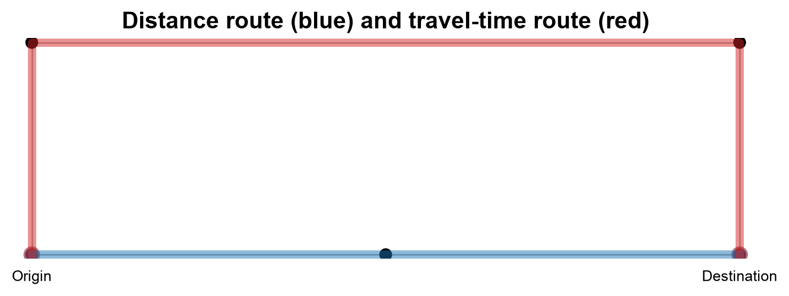
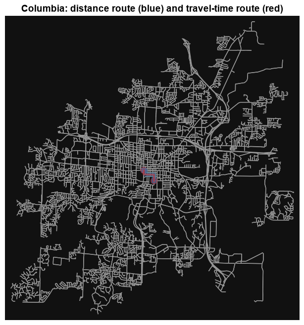

5.4. Routing and Shortest Paths#
5.4.1. Learning objectives#
By the end of this section, you should be able to:
explain a shortest path as a minimum-cost path and choose a cost that matches the question;
snap coordinates to graph nodes and check the quality of the snap;
compare a distance route with a time route and report both correctly on a multigraph;
handle origins and destinations that cannot be connected;
interpret a detour factor and say why a nearest-neighbour stop order is not optimal; and
validate and document a route.
Section goal
Turn a pair of coordinates into a route that can be defended. A small synthetic city with known lengths and speeds shows how cost, snapping, parallel edges, and no-path cases behave, and the same code then runs on the Columbia graph.
5.4.2. Define the route cost#
A shortest route is only meaningful after choosing a cost. length answers a distance
question; travel_time answers a time question. Other costs can represent tolls,
slope, risk, or a policy penalty, provided the edge values and units are documented.
Table 5.14 compares them.
Cost field |
Question |
Unit |
Caution |
|---|---|---|---|
|
Which route is shortest in distance? |
Metres |
Ignores speed and delay |
|
Which route is fastest? |
Seconds |
Estimated from speed limits and imputed speeds, not from observed traffic |
A custom cost |
Which route avoids a penalty such as slope, risk, or tolls? |
Documented by the analyst |
Values must be recorded and must not be negative |
A shortest path is the path whose edge costs add up to the smallest total. OSMnx and NetworkX find it with Dijkstra’s algorithm [Dijkstra, 1959], which grows outward from the origin and always extends the cheapest unexplored path first. That strategy is only correct when no cost is negative, so a custom penalty must never subtract.
Travel time is derived. OSMnx [Boeing, 2025] reads each edge’s maxspeed tag where one exists and fills
the others with an estimate based on the road type, stores the result as speed_kph, and
computes travel_time in seconds as the edge length divided by the speed.
The toy city below has a short, slow route and a long, fast one between an origin 1 and a
destination 3. A 1,000 m residential street runs straight between them at 30 km/h. A
1,600 m detour of primary roads runs at 80 km/h, and its long section has a parallel,
shorter but slower tertiary road. Nodes 6 and 7 form a separate pair of streets that
are not connected to the rest.
edge type length m km/h seconds
1->2 #0 residential 500 30 60.0
1->4 #0 primary 300 80 13.5
2->3 #0 residential 500 30 60.0
3->5 #0 primary 300 80 13.5
4->5 #0 primary 1000 80 45.0
4->5 #1 tertiary 950 30 114.0
6->7 #0 residential 100 30 12.0
Each travel_time is the length divided by the speed: the 500 m residential edge at 30 km/h
takes 60 s, and the 1,000 m primary edge at 80 km/h takes 45 s. The two parallel edges
between nodes 4 and 5 differ in length and in time, which matters below. On the Columbia
graph the same two calls add the speeds and travel times. OSMnx estimates missing speeds,
so treat the resulting travel times as estimates, not observations, and inspect the imputed
values before making a decision.
The cell below loads the drivable network of Columbia from S01 so that this section runs on its own. The first download is cached.
5766 13888 epsg:4326
5.4.3. Snap locations to the graph#
Coordinates describe arbitrary locations, while routing requires graph nodes. Table 5.15 lists the two ways to snap.
Method |
Returns |
Strength |
Caution |
|---|---|---|---|
|
The closest node |
Fast, and routing needs a node |
Error up to about half a block, and the node can lie across a barrier |
|
The closest edge and the point on it |
Locates the point on the street itself |
A new node must be inserted into the graph before routing |
Whichever method is used, ask for the snap distance with return_dist=True. A snap of a few
metres is routine, whereas a snap of hundreds of metres means the point is outside the
network or the CRS is wrong. The graph and the coordinates must use compatible CRS
conventions: a projected graph needs projected coordinates, and an unprojected graph needs
longitude and latitude. The cell below supplies the same location both ways to a projected
graph.
lon/lat passed to a projected graph: node 1, snap distance 4,329 km
projected first: node 4, snap distance 14.1 m
Passing longitude and latitude to a projected graph still returns a node, but one thousands
of kilometres away, and only the snap distance reveals it. Projecting the point first gives a
14 m snap to node 4. Check the same things on the Columbia graph, which is unprojected and
therefore takes longitude and latitude directly (OSMnx needs the scikit-learn package to
snap on an unprojected graph). Check that the nearest nodes fall inside the intended study
area and that the selected network type matches the traveler:
5.4.4. Compare distance and time routes#
ox.shortest_path takes the graph, the two nodes, and the weight to minimize. Different
weights can choose different routes between the same two nodes, which is the point of
comparing them. The toy city has such a pair:
distance route nodes: [1, 2, 3]
time route nodes: [1, 4, 5, 3]
distance route: length 1000.0 m, time 120.0 s
time route: length 1550.0 m (wrong), time 72.0 s
The distance route takes the 1,000 m street in 120 s, and the time route takes the 1,600 m primary detour in 72 s, 60% longer in distance and 40% shorter in time. Neither is wrong; they answer different questions.
The last line exposes a trap on multigraphs. For a multigraph, calculate a route’s edge
attributes using the edge selected by the algorithm rather than assuming that key 0 is
always the correct parallel edge. route_cost selects the least-cost parallel edge, which
is correct when the attribute is the weight the route was found with. For another
attribute it can pick a different edge: the time route used the 1,000 m primary road
between nodes 4 and 5, but the least length is the slower 950 m tertiary road, so
route_cost reports 1,550 m instead of 1,600 m. The function below selects the edge by
the routing weight and reports both attributes of that same edge.
distance route (length m, time s): (1000.0, 120.0)
time route (length m, time s): (1600.0, 72.0)
The time route now reports 1,600 m and 72 s, using one edge for both numbers. OSMnx also
offers ox.routing.route_to_gdf(G, route, weight=...), which returns the chosen edges as a
table. On the Columbia graph the comparison and the cost function are:
distance route nodes: 13
time route nodes: 13
distance (m): 1134.1625754239046
time (s): 98.9447276988518
distance route (length m, time s): (np.float64(1134.1625754239046), 107.34951487773185)
time route (length m, time s): (np.float64(1135.4146831285439), 98.9447276988518)
On Columbia the two routes are nearly the same: the time route is 1.2 m longer (0.1%) and 8.4 s faster (8%), and both use 13 nodes, so the choice of cost matters little for this short trip. In the toy city the same choice changed the route completely.
The shortest-time route may be longer because a faster road can reduce total travel
time. Not every pair of nodes can be connected. nx.shortest_path raises
networkx.NetworkXNoPath, whereas ox.shortest_path returns None, and either way the
origin should be reported as disconnected instead of silently substituting a straight-line
distance. The toy city has an island of two streets that no route can reach:
ox.shortest_path returns: None
nx.shortest_path raises: NetworkXNoPath - No path between 1 and 6.
nodes unreachable from the origin: [6, 7]
A None that is passed on to later code, for example as len(route), fails far from its
cause, so test for it where the route is computed. Listing the unreachable nodes, as above,
is also the cheapest way to report disconnected origins in bulk.
5.4.5. Detour and multi-stop routing#
The detour factor compares a network route to a straight-line reference: the route length divided by the straight-line distance. A factor of 1 means the network offers a direct route, and larger values mean barriers or sparse links. The reference must join the same two points as the route, which are the snapped nodes, not the original coordinates, or the snap error leaks into the factor.
distance route: 1,000 m / 1,000 m straight line = detour factor 1.00
time route: 1,600 m / 1,000 m straight line = detour factor 1.60
The distance route has a factor of 1.00 because the street runs straight, and the time route has 1.60. A high factor is not an error by itself, but it is a prompt to ask whether the network, the cost, or the snapped points explain it. On Columbia the factor is computed from the original coordinates:
detour factor: 1.4312913941734
A factor of 1.43 means about 1,134 m of street for a straight line of 792 m. As the text above advises, the reference should join the snapped nodes, whereas this one joins the original coordinates, so any snap error is included in the factor.
For multiple destinations, create a distance matrix and then apply a route-ordering method. A nearest-neighbor order is fast but is not guaranteed to be optimal [Rosenkrantz et al., 1977]; larger problems need a documented optimization method. The toy below places a depot and four stops on one long street, so the exact answer can be found by trying every order.
nearest-neighbour: [500, -600, -2400, 2000] 7,800 m
optimal: [500, 2000, -600, -2400] 6,400 m
The nearest-neighbour rule is lured by the closest stop each time. It visits the stop 500 m east, then turns west for two stops, and finally has to cross the whole street to reach the far east stop, for 7,800 m in total. The optimal order finishes the east side first and then the west, for 6,400 m, so the nearest-neighbour route is about 22% longer. Trying every order grows factorially, so beyond roughly nine stops a heuristic or a solver is needed, and its method and settings belong in the record. On the Columbia graph, a distance matrix is built with one Dijkstra search from each stop:
5.4.6. Visualize and validate#
A route that looks plausible on a map is not yet validated. Check that it starts and ends at the snapped nodes, that every consecutive pair of nodes is joined by an edge, that it does not revisit a node, that it is not None, and that the cost recomputed from the edges matches the cost the algorithm reports. The toy city shows both routes and runs those checks.


Fig. 5.3 The distance route (blue) and the travel-time route (red) between the origin and destination of the toy city; the unreachable island is left out.#
In Fig. 5.3, the blue distance route follows the straight 1,000 m residential street along the bottom. The red time route climbs the 300 m primary road, crosses the 1,000 m primary road at the top, and descends the second 300 m primary road, 1,600 m in all. The two parallel roads between the top corners overlap on the map, so the figure cannot show which one was chosen. The validation below reads the chosen edges directly, which is the multigraph trap that the cost functions above are written to handle.
distance route: passed all checks, length = 1,000.0
time route: passed all checks, travel_time = 72.0
route_cost is valid here because each route is checked against the weight it was found with. The function raises an AssertionError on the first failed check, so a route that prints has passed all of them. To see which parallel edge the time route used, list the chosen edges:
highway length travel_time
u v key
1 4 0 primary 300.0 13.5
4 5 0 primary 1000.0 45.0
5 3 0 primary 300.0 13.5
The table shows that the segment between nodes 4 and 5 is the 1,000 m primary road at 45 s, not the 950 m tertiary road at about 114 s. The figure could not show this.
On the Columbia graph the routes are drawn and checked the same way. The two routes differ by about a metre, so the distance route is drawn wider and underneath to keep both visible:
Text(0.5, 1.0, 'Columbia: distance route (blue) and travel-time route (red)')

distance route: passed all checks, length = 1,134.2
time route: passed all checks, travel_time = 98.9
Record the origin and destination, graph mode, cost field, route length, travel time, and any missing or imputed edge values. A route that passes these checks is internally consistent. It is only as accurate as the speeds behind it, which here are speed-limit tags and road-type estimates rather than observed traffic.
5.4.7. Summary#
Routing is a weighted graph problem, not a nearest-point calculation. Snap locations carefully and check the snap distance, choose a cost that matches the question, preserve directionality, read parallel edges by the routing weight, handle no-path cases, and report the assumptions behind every route, including the stop-ordering method when there is more than one destination.